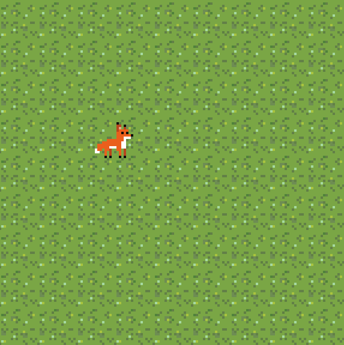
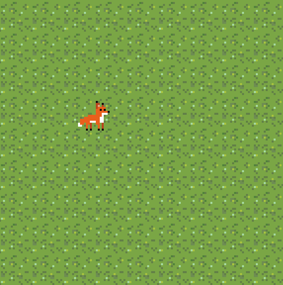
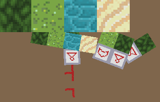

When I first started in 2020 with attempting to make a game, I barely knew any C. All I had done up to this point was write an x86 bootloader in assembly, attempt to do something in Unity using C# and play around with command line C programs.
This early dive into game and engine development was heavily influenced by Stardew Valley and Pokemon. Everything from the tile based level to the art style.
I started off using just SDL2 and learned everything from Lazy Foo's tutorials In the beginning my language of choice was C and that has remained. This is logically a somewhat odd choice but its just personal preference for the simplicity and control i have with C. I could just as easily have done all of this in something more suitable like C++ but wheres the fun in that?

After level creation and movement was done, I worked on level
interaction and automatic calculation of the borders between tile types.
I did these calculations using a method similar to a cellular automaton.
Each configuration of the 8 neighbours of a tile is assigned an index
into the tilemap below. This later proved to not work too well for
intersections of more than 2 materials, but for 2 materials the effect
is quite nice.  

I developed an immediate mode (as opposed to a retained mode) user interface library from scratch for this project which I used for the inventory and menus. Designing a good UI library is hard.. You'll see this theme come up a couple times again when I talk about my 3D engine as well. The UI of this game was very bare bones and crude but it worked well enough for my uses.
I then used this UI system to make a cute little inventory system which served absolutely no purpose. Well, it would've served a purpose if i'd had any planning for the direction the game should've taken. But, alas, I had no idea what I was doing.

This project was ended when I attempted to expand the game to support a fully procedurally generated map. By this point the code base was a mess and memory leaks were popping up like a game of whack-a-mole (I got pretty far considering this was my first project of this scale).
Although this game never ended up coming to anything, it taught me an incredible amount about basic programming, C, and engine development. This game is the catalyst which later drove me to make a 3D game engine. I deem this project was a success, even though there was no end goal to begin with.
Insert why switch to openGL
Originally, the only reason i wanted to switch to opengl was so I could rotate sprites, but I was too tempted by the ability to go fully 3D (I also naively though it would be easy if I'd already come this far).

I used the wonderfully well made site LearnOpenGL by Joey de Vries to get started with basic 3D rendering. Once i'd gotten a fairly loose grasp on using opengl and toyed around with writing some shaders, my priorities changed, I no longer wanted to make a game, I wanted to make a game engine instead.
By this point I had a comfortable grasp of most of C and abided by a fair amount of good coding practices (not enough). I went through and worked my way through the tutorial series. Starting off with .obj 3D model parsing / loading. Doing this early on helped immensely with mentally mapping from a 3D object and its triangles to the vertex data the GPU takes in.
I followed the tutorials up to the point of basic specular lighting and then toyed around with some different models and normal / bump maps.
I then polished up the look of everything and spent a while messing around with shaders to get the overall program into a more presentable package.
Now comes the second attempt at a UI library. This time I went with a retained mode UI and modeled it after a combination of html and css. I used JSMN to tokenize JSON files and then parsed the contents from there. UI files contained a style section for element classes and a hierarchical scene section for the elements themselves. Classes can be applied to elements when loaded from a file and classes can be applied to elements upon hovering or clicking. A goal of mine at this point was to make every resource (models, textures, shaders) easily hot reloadable. This included UI and I managed to get it to a point where it was usable enough to drastically speed up UI prototyping.
This second attempt at a UI system worked great, that is until my ignorance of memory leaks caught up to me and impossible to track down bugs started popping up.
I needed to change up my approach if I wanted to have a usable program with hot reloading and no memory leaks. So I started to modularize as much as I could, I wrote completely independent libraries for each part of the engine (e.g. mesh loading, shader loading, ui layout, etc). The intention was to write and test each module by itself and then combine them all into the final engine.
With the most recent attempt at a UI I started off by focusing on functionality of laying out elements before even thinking about visual things like radiused corners or the parsing and serializing aspects.